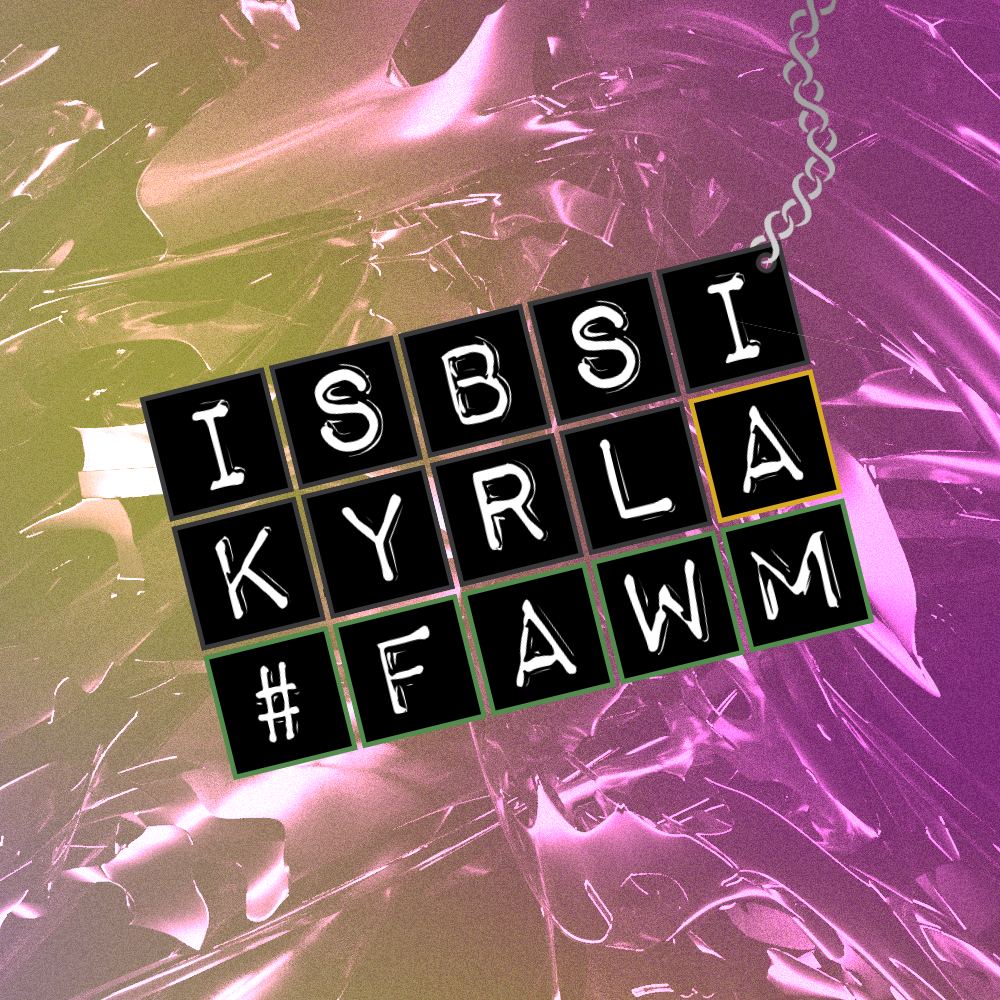

ISBSI |
| 2022 | ||||
|  | ||||
| for FAWM 2022 | ||||
|
Part 3, Part 1 Part 3, Part 2 Part 3, Part 3, Part 3 (Part 3) Part 1 (Part 2) | ||||
Part 3, Part 1#05 | 2:36You need to think carefully before applying. Cross the t's and dot the i's, (All change please) Check your work, don't be surprised. (Change here) Before we send it off we'll check we've got the stuff. (The next station is) Within a day you'll be underway, into the hive. We're always recruiting. Talk to your local Karen today. We know you won't regret it, Here's your visor, don't forget it. Take a breath and take your time, We'll never leave you left behind. Just let your worries go, Ignore the folks who'll never know, 'Cause though it might be slow, Your soul will glow. | ||||
Part 3, Part 2#06 | 3:46Leave your inhibitions at the door, Haven't you yearned for something more? Haven't you felt the pull of something bringing you to come explore? Is it the eyes? Is it the ears? Is it the freedom or the gear? Well we're just happy that you've finally made it all the way down here. Left to dry, just in case I crash out, Fume hoods down, just in case I splash out, Visors on, just in case I lash out. | ||||
Part 3, Part 3, Part 3 (Part 3)#11 | 3:12(Tomorrow, Storm Eunice will bring damaging wind gusts to England and Wales.) Karen calling, Answer now. Welcome, soldier, You are found. Helix decals, Fluorochrome. No more missed calls, Finally home. | ||||
Part 1 (Part 2)#13 | 4:04Mixed up in melodies and wrestling the rhythms, It's a tall task to try and get ahead. Making my mark and I'm making my music, But I Should Be Studying Instead .
Taking my time and I'll make my excuses, Cause I Should Be Studying Instead .
( I Should Be Studying Instead )
( I Should Be Studying Instead )
(Oh-woah, but I Should Be Studying Instead )
(but I Should Be Studying Instead )
(Oh-woah, but I Should Be Studying Instead )
(but I Should Be Studying Instead )
| ||||